Hantek 6022BL¶

Hantek 6022BL¶
| Status | supported |
| Source code | hantek-6xxx |
| Channels | 2 |
| Samplerate | 48MHz |
| Analog bandwidth | 20MHz |
| Vertical resolution | 8bit |
| Triggers | none (SW-only) |
| Input impedance | 1MΩ‖25pF |
| Memory | none |
| Display | none |
| Connectivity | USB |
| Website | hantek.com |
The Hantek 6022BL is a USB-based, 2-channel oscilloscope with an analog bandwidth of 20MS/s and 48MS/s sampling rate, and an 8-/16-channel logic analyzer with 24MHz sampling rate.
The device can either be used as oscilloscope or as logic analyzer, but not both at the same time. I.e., it is not a mixed-signal-oscilloscope (MSO).
Currently only the 8-channel logic analyzer mode is supported.
See Hantek 6022BL/Info for more details (such as lsusb -v output) about the device.
Hardware¶
- USB: Cypress CY7C68013A-100AXC (FX2LP) (datasheet) or Corebai CBM9002A (datasheet)
- 256-byte I²C EEPROM: 2x Microchip 24LC02BI (datasheet)
- 16-Bit bus transceiver with 3-state outputs: TI SN74LVC16245A (datasheet)
- 8-channel analog mux/demux: 2x NXP 74HC4051D (datasheet)
- 1A low-dropout voltage regulator (3.3V): Advanced Monolithic Systems AMS1117-3.3 datasheet)
- 2W, fixed input, isolated & unregulated dual/single output DC/DC converter: Mornsun A_S-2WR2 (A0505S-2WR2) (datasheet)
- ADC: (educated guess, IC covered by glued-on heatsink) 8-bit, 40/80/100MHz, dual ADC: Analog Devices AD9288 (datasheet), or
- 8-bit, 100MHz, dual ADC: MXTronix MXT2088 (datasheet)
- 1.4GHz current feedback amplifiers with enable: 2x Intersil EL5166 (datasheet)
- 145 MHz FastFET Opamps: 2x AD8065: (datasheet), markings "HRA"
- Crystal: 24MHz
- Probes: 2x PP80B 1X/10X 80MHz bandwidth oscilloscope probes
- Attenuator: Hantek HT-201 20:1 attenuator (10MHz bandwidth, 1.053M input resistance)
The device has a "H/P" button. Depending on whether or not it's pressed it comes up with different USB VID/PIDs:
- Pressed: 04b4:602a Cypress Semiconductor Corp. (used for oscilloscope mode)
- Not pressed: 0925:3881 Lakeview Research Saleae Logic (Saleae Logic VID/PID, so fx2lafw works out of the box)
NXP 74HC4051D (upper/lower, CH1/CH2) pinout:
| Y4 | 1- | O | -16 | VCC |
|---|---|---|---|---|
| (GND) Y6 | 2- | -15 | Y2 | |
| (upper EL5166, IN-) Z | 3- | -14 | Y1 | |
| (GND) Y7 | 4- | -13 | Y0 | |
| (GND) Y5 | 5- | -12 | Y3 | |
| (GND) E# | 6- | -11 | S0 (FX2 PA1) | |
| VEE | 7- | -10 | S1 (FX2 PA2) | |
| GND | 8- | -9 | S2 (FX2 PA3) |
| (GND) Y4 | 1- | O | -16 | VCC |
|---|---|---|---|---|
| (GND) Y6 | 2- | -15 | Y2 | |
| (lower EL5166, IN-) Z | 3- | -14 | Y1 | |
| (GND) Y7 | 4- | -13 | Y0 | |
| (GND) Y5 | 5- | -12 | Y3 | |
| (GND) E# | 6- | -11 | S0 (FX2 PA4) | |
| VEE | 7- | -10 | S1 (FX2 PA5) | |
| GND | 8- | -9 | S2 (FX2 PA6) |
| S2 | S1 | S0 | 74HC4051D Mux | VDIVs (vendor software) |
|---|---|---|---|---|
| 0 | 0 | 0 | Y0 to Z | 200mV |
| 0 | 0 | 1 | Y1 to Z | 500mV |
| 0 | 1 | 0 | Y2 to Z | 5V, 2V, 1V |
| 0 | 1 | 1 | Y3 to Z | 100mV, 50mV, 20mV |
Intersil EL5166 (both) pinout:
| NC | 1- | O | -8 | CE# |
|---|---|---|---|---|
| (upper/lower 74HC4051D, Z) IN- | 2- | -7 | VS+ | |
| (AD8065, IN-/VOUT) IN+ | 3- | -6 | OUT | |
| VS- | 4- | -5 | NC |
Microchip 24LC02BI (both) pinout:
| (Low, but not GND) A0 | 1- | O | -8 | VCC |
|---|---|---|---|---|
| (GND) A1 | 2- | -7 | WP (GND) | |
| (GND) A2 | 3- | -6 | SCL (FX2 SCL) | |
| VSS | 4- | -5 | SDA (FX2 SDA) |
Analog Devices ADS9288 pinout:
| AD9288 pins | Description |
|---|---|
| S1, S2 | S1 depends on FX2 PA7 (see below), S2 is tied to GND. |
| DFS | Tied to GND. Data format select = "offset binary" (not "twos complement"). |
| AINA, AINB | Analog input channels. |
Cypress FX2 pinout:
| FX2 pins | Description |
|---|---|
| CTL0 | Connected to AD9288 ENCA and ENCB and FX2 IFCLK. |
| PB0-PB7 | Connected to AD9288 D0A-D7A and SN74LVC16245A 1A1-1A8. |
| PD0-PD7 | Connected to AD9288 D0B-D7B and SN74LVC16245A 2A1-2A8. |
| PA7 | Connected to the SN74LVC16245A's 1OE# and 2OE# pins (both 8bit groups share the signal) as well as 1DIR and 2DIR. Also connected to the ADC's S1 pin (via two discrete inverters with R37, Q2, R13, Q1). |
| This means PA7 selects between digital (low) and analog (high) data paths, data is always at FX2 ports PB and PD, and either carries 16 digital channels, or two eight bit analog channels. | |
| The benefit of "variable DIR" in the SN74LVC16245A is questionable, since it shares the signal with OE# and for high levels the output is high-Z anyway -- so the ADC output is not routed to digital pins when PA7 is high, not tying DIR to a fixed level is pointless(?) |
PA7 | Description | | 1 | Selects scope mode. The ADC's S1 pin is high, which means "Normal operation, data align disabled". The SN74LVC16245A's OE# pins are high ("don't enable output", DIR state is irrelevant). | | 0 | Selects LA mode. The ADC's S1 pin is low, which means "Standby both channels A and B". The SN74LVC16245A's OE# pins are low ("output enable") and the DIR pins are low ("B data to A bus", i.e. data direction is from LA connector to FX2). |
PC2
1kHz probe calibration pin.
PC0/PC1
Dual-color (red/green) LED. | PC1 | PC0 | LED | |---|---|---| | 0 | 0 | ? | | 0 | 1 | green | | 1 | 0 | red | | 1 | 1 | off |
Photos¶
Hantek 6022bl Accessories
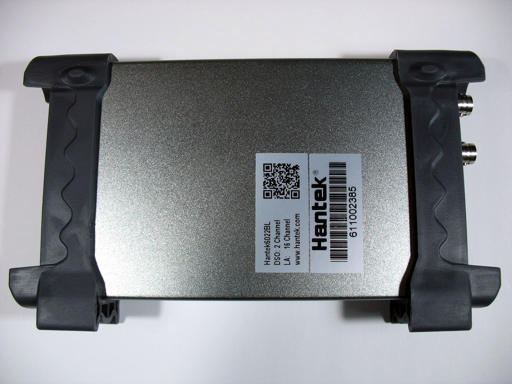 Hantek 6022bl Device Bottom
{kind=link}
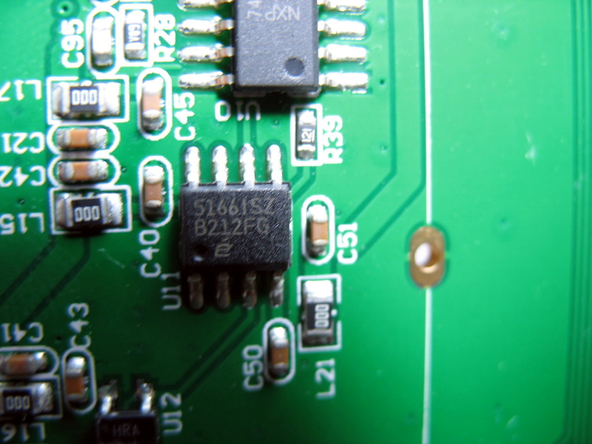 Hantek 6022bl S1661sz B212fg
{kind=link}
 Hantek 6022bl 20 1 Attenuator Ht 201 Top
Hantek 6022bl 20 1 Attenuator Ht 201 Top
 Hantek 6022bl Pcb Top
Hantek 6022bl Pcb Top
 Hantek 6022bl Input Stage
Hantek 6022bl Input Stage
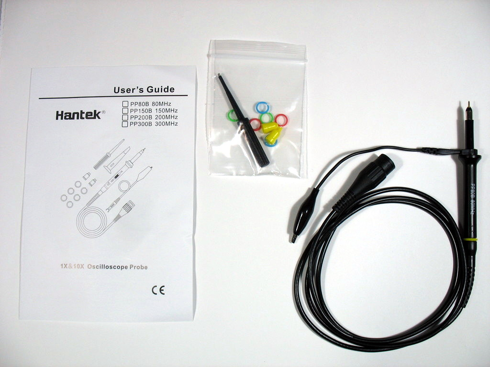 Hantek 6022bl Probes
{kind=link}
 Hantek 6022bl Device Connectors
Hantek 6022bl Device Connectors
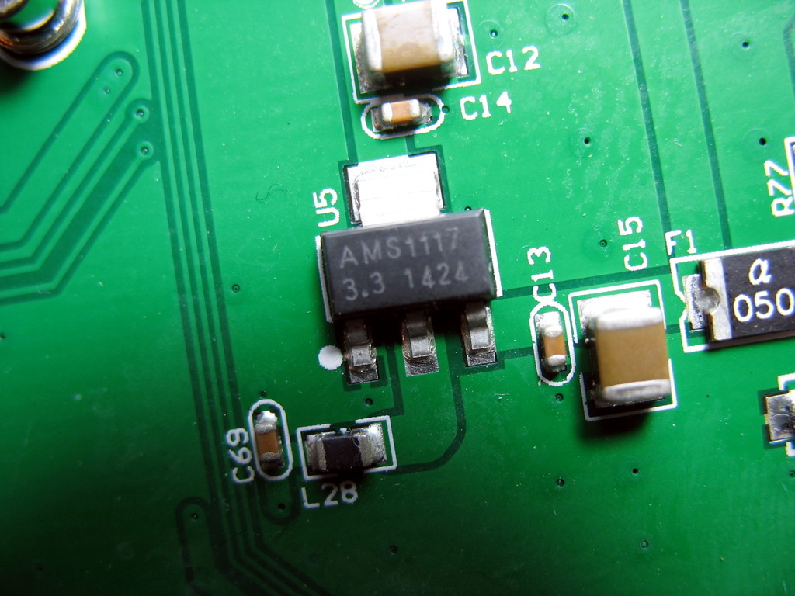 Hantek 6022bl Ams1117
{kind=link}
 Hantek 6022bl Pcb Bottom
Hantek 6022bl Pcb Bottom
 Hantek 6022bl Device Top
Hantek 6022bl Device Top
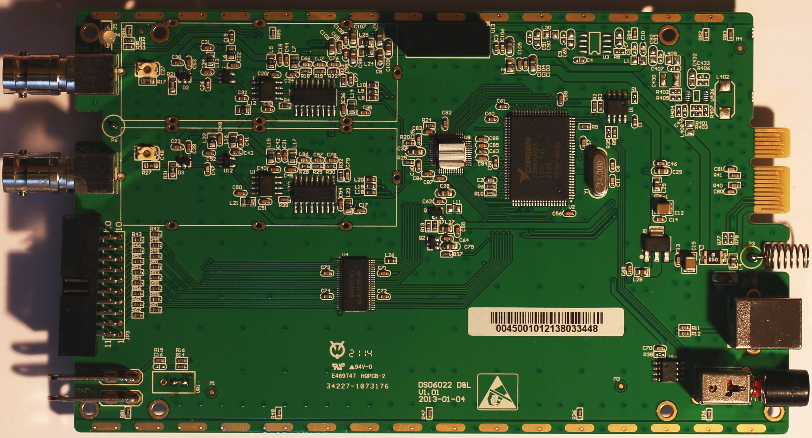 Hantek 6022bl Pcb
{kind=link}
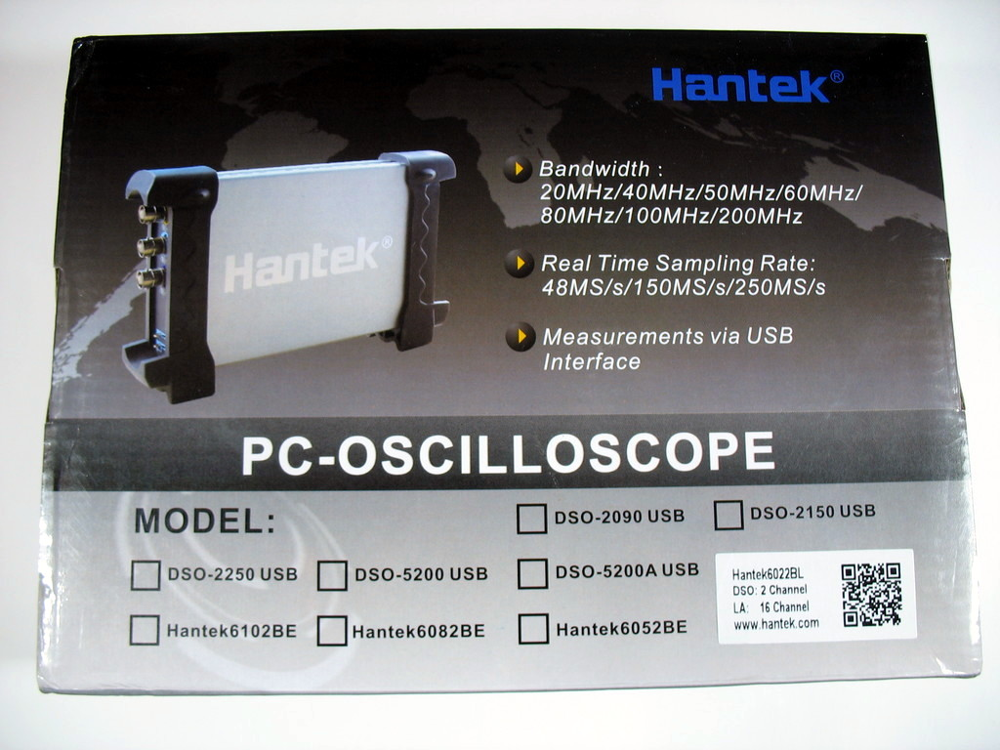 Hantek 6022bl Box
{kind=link}
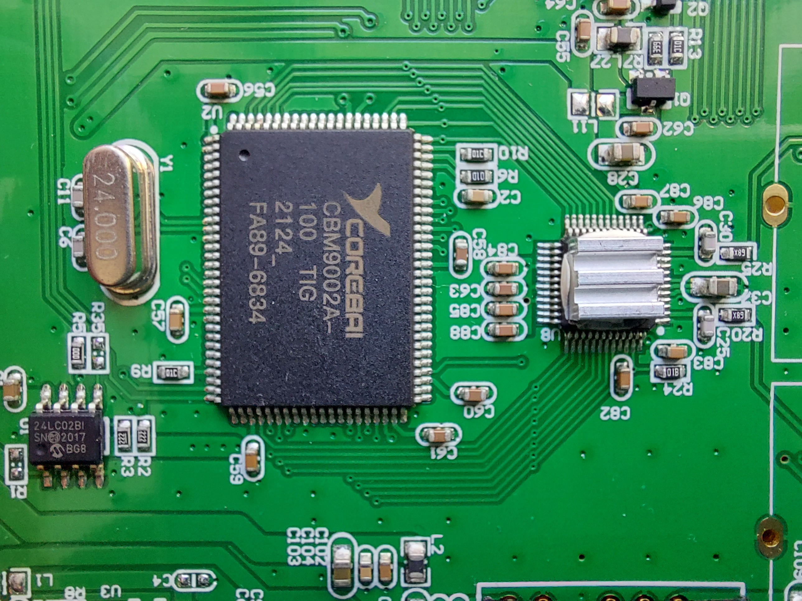 Hantek6022bl Cpu
{kind=link}
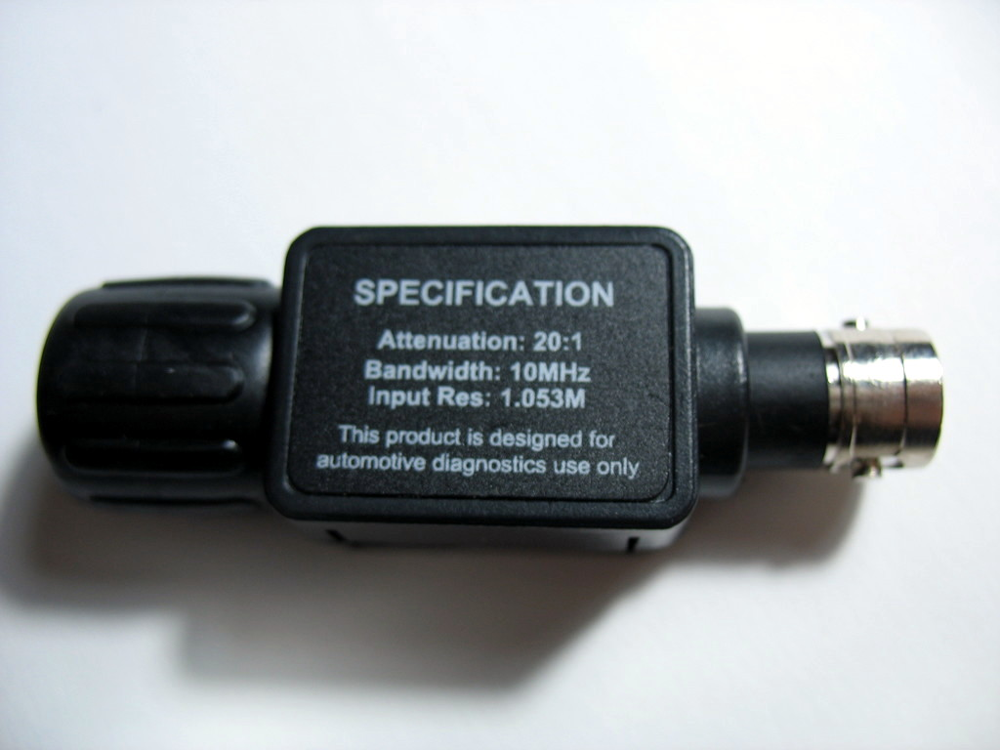 Hantek 6022bl 20 1 Attenuator Ht 201 Bottom
{kind=link}
 Hantek 6022bl Ti Lvc16245a
Hantek 6022bl Ti Lvc16245a
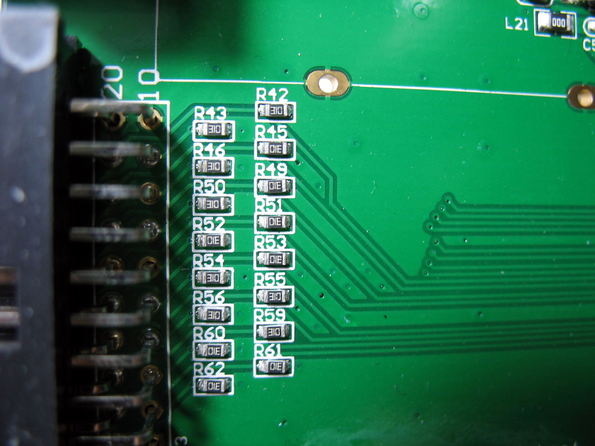 Hantek 6022bl La Input Stage
{kind=link}
 Hantek 6022bl Cypress Fx2lp
Hantek 6022bl Cypress Fx2lp
 Hantek 6022bl Mornsun A0505s 2wr2
Hantek 6022bl Mornsun A0505s 2wr2
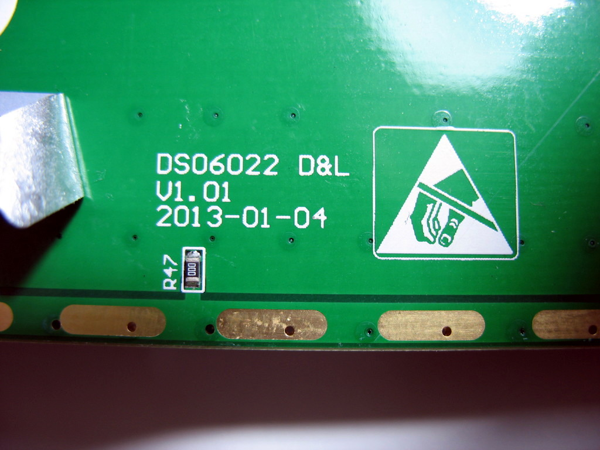 Hantek 6022bl Pcb Silkscreen
{kind=link}
 Hantek 6022bl Device Usb
Hantek 6022bl Device Usb
 Hantek 6022bl Microchip 24lc02bi
Hantek 6022bl Microchip 24lc02bi
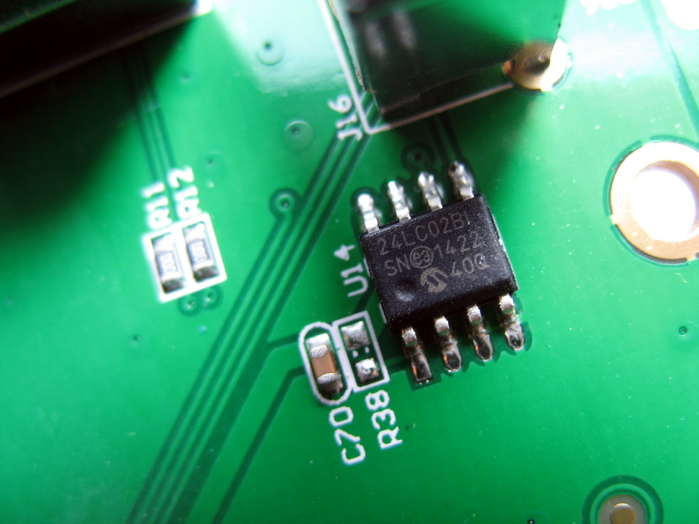 Hantek 6022bl Microchip 24lc02bi Button
{kind=link}
 Hantek 6022be Mugshot
Hantek 6022be Mugshot
Protocol¶
When the "H/P" button is not pressed, the device can be used as 8-channel 24MHz logic analyzer via fx2lafw out of the box (using the fx2lafw protocol).